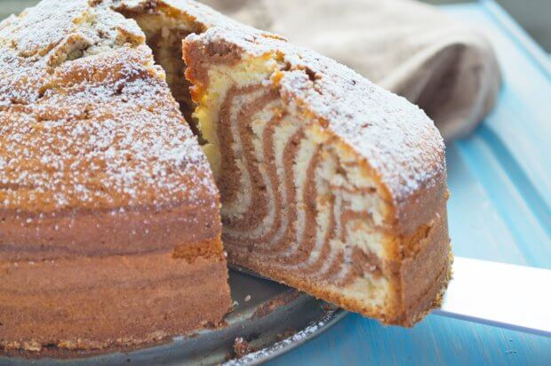

Zebrastreifen - Kuchen

Zutaten für 1 Portion
| Menge |
Angabe |
Zutaten |
| 5 |
Stk |
Eier |
| 300 |
g |
Zucker |
| 1 |
Pk |
Vanillezucker |
| 1 |
Pk |
Backpulver |
| 130 |
ml |
Wasser |
| 370 |
g |
Mehl |
| 250 |
ml |
Öl |
| 3 |
El |
Kakaopulver |
Zubereitung
- Das Mehl, das Backpulver, den Vanillezucker, das Wasser, das Öl, die Eier und den Zucker in einer Schüssel vermengen. Das Backrohr auf 180 C° vorheizen.
- Dann die Hälfte des Teiges in eine andere Schüssel geben und das Kakaopulver hinzufügen. Eine Springform (Durchm. 26) mit der Butter gut ausfetten und mit Mehl bestauben.
- Zuerst 2 EL hellen Teig in die Mitte der Springform geben. Danach direkt darauf 2 EL dunklen Teig geben. Auf diese Weise hellen und dunklen Teig immer abwechselnd direkt übereinander einfüllen.
- Danach den Kuchen im Backofen für 50 Minuten bei Ober- und Unterhitze backen.
Marillenkuchen
Zutaten für 12 Portionen
| Menge |
Angabe |
Zutaten |
| 200 |
g |
Butter |
| 200 |
g |
Staubzucker |
| 1 |
Pk |
Vanillezucker |
| 1 |
Prise |
Salz |
| 200 |
g |
Mehl |
| 4 |
Stk |
Eier |
| 1 |
kg |
Marillen |
| 0.5 |
Stk |
Zitronen (Schalen) |
| 1 |
Tl |
Backpulver |
Zubereitung
- Für den Marillenkuchen zuerst die Marillen waschen, halbieren und entkernen.
- Die Eier trennen und aus dem Eiklar Schnee schlagen.
- Die weiche Butter mit Zucker, Vanillezucker, Eidotter, etwas Salz und der geriebenen Zitronenschale in einer Schüssel schaumig rühren.
- In einer anderen Schüssel das Mehl mit dem Backpulver gut vermengen und danach langsam in die schaumige Eidottermasse rühren.
- Jetzt nur noch den Eischnee unter die Masse unterheben und fertig ist die Teigmasse für den Kuchen.
- Den fertigen Teig in eine eingefettete und bemehlte Form (z.B. Backblech, Ringform, ...) streichen und die halbierten Marillen, mit der Schnittfläche nach oben, eng nebeneinander in den Teig drücken.
- Im vorgeheizten Backofen bei 180 Grad ca. 40 Minuten auf der mittleren Schiene backen.